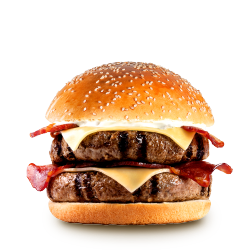

Hamburguesa doble con queso y tocino

Si hay algo que caracteriza a muchos de los retos gastronómicos de Estados Unidos, son las hamburguesas exageradamente grandes. Esta versión lleva la idea a la cocina casera con dos carnes de vacuno, queso derretido, tocino crujiente y una buena cantidad de salsa. No necesitas enfrentarte a un récord mundial para disfrutarla: basta con prepararla cuando tengas ganas de una hamburguesa realmente contundente